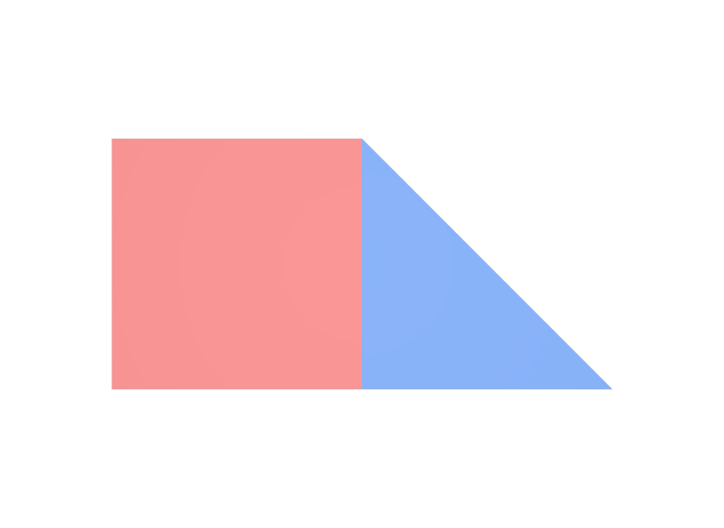

faceVertexCountsの合計とfaceVertexIndicesの個数が合わない
いちばん多い壊れ方です。faceVertexCounts = [4, 4]ならfaceVertexIndicesはちょうど8個必要です。7個でも9個でもいけません。Faceを1枚足したのに番号を足し忘れた、という形で起きます。
STEP 25 · MESH TOPOLOGY
点を並べ、その番号で面を組み立てます
今日これだけ
公式情報に基づく説明
Meshは、多角形の面（Face）を集めて形を作るGprimです。その形は3つのAttributeで記述します。
point3f[] pointsは、頂点の座標を並べた配列です。ここに並べた順番が、そのままPoint番号（0から始まる通し番号）になります。points自体は面の情報を持たず、空間に置かれた点の一覧でしかありません。
int[] faceVertexCountsは、Faceを1枚ずつ「何角形か」で並べた配列です。要素が1つならFace 1枚、要素が3つならFace 3枚です。つまりこの配列の要素数がFaceの枚数になります。値が4なら四角形、3なら三角形で、1つのMeshの中に混ぜて構いません。
int[] faceVertexIndicesは、各Faceがどの点を使うかを、Point番号で並べた配列です。Face 0が使う番号、Face 1が使う番号、…と、区切りを入れずに一列に並べます。どこで区切るかはfaceVertexCountsが決めます。
Diagram
USDA
def Mesh "Plate"
{
uniform token subdivisionScheme = "none"
# Face は 2 枚。1 枚目は四角形（4）、2 枚目は三角形（3）
int[] faceVertexCounts = [4, 3]
# 合計 7 個。Face の順に、points の番号を並べる
int[] faceVertexIndices = [0, 1, 4, 3, 1, 2, 4]
# Point は 5 個
point3f[] points = [
(0, 0, 0), (1, 0, 0), (2, 0, 0),
(0, 1, 0), (1, 1, 0),
]
# Face ごとに 1 個 = 2 個。どこが 1 枚の Face かを見えるようにする
color3f[] primvars:displayColor = [(0.85, 0.2, 0.2), (0.15, 0.35, 0.85)] (
interpolation = "uniform"
)
}faceVertexIndicesをfaceVertexCountsのとおりに切り分けると、Face 0は[0, 1, 4, 3]の4点、Face 1は[1, 2, 4]の3点になります。番号1と4は両方のFaceに出てきます。この2点が、四角形と三角形が接している辺です。
結果

uniformのdisplayColorでFaceごとに色を変えているため、面の境目がそのまま見えます。examples/lesson-35/topology.usda / Apple USD Tools 0.25.2 のusdrecord（Hydra Storm・Metal）/ macOS 26.5.2・Apple M4数え方
Meshからは3種類の「個数」が読み取れます。次のSTEPから始まるPrimvarのinterpolationは、この3つの数のどれかを指しています。ここで数え方を身につけておくと、Primvarに値をいくつ書けばよいかが自分で分かるようになります。
| 数える対象 | 求め方 | 上のPlateでの値 |
|---|---|---|
| Point数 | pointsの要素数 | 5 |
| Face数 | faceVertexCountsの要素数 | 2 |
| Face Vertex数 | faceVertexCountsの合計。faceVertexIndicesの要素数と必ず一致する | 7 |
Face Vertexは「あるFaceから見たときの、その頂点」を指します。Point 1は空間上の点としては1個ですが、四角形から見たものと三角形から見たものは別のFace Vertexとして数えます。だからFace Vertex数（7）はPoint数（5）より多くなります。
Python
from pxr import Gf, Sdf, Usd, UsdGeom
stage = Usd.Stage.CreateNew("topology.usda")
mesh = UsdGeom.Mesh.Define(stage, "/Plate")
mesh.CreateSubdivisionSchemeAttr("none")
mesh.CreateFaceVertexCountsAttr([4, 3])
mesh.CreateFaceVertexIndicesAttr([0, 1, 4, 3, 1, 2, 4])
mesh.CreatePointsAttr([
Gf.Vec3f(0, 0, 0), Gf.Vec3f(1, 0, 0), Gf.Vec3f(2, 0, 0),
Gf.Vec3f(0, 1, 0), Gf.Vec3f(1, 1, 0),
])
# 3 つの数を数える
counts = mesh.GetFaceVertexCountsAttr().Get()
indices = mesh.GetFaceVertexIndicesAttr().Get()
print("Point 数 =", len(mesh.GetPointsAttr().Get()))
print("Face 数 =", len(counts))
print("Face Vertex 数 =", sum(counts), len(indices))
# Face ごとに切り分けて、使っている Point 番号を確かめる
offset = 0
for i, n in enumerate(counts):
print("Face %d :" % i, list(indices[offset:offset + n]))
offset += n
stage.Save()Point 数 = 5
Face 数 = 2
Face Vertex 数 = 7 7
Face 0 : [0, 1, 4, 3]
Face 1 : [1, 2, 4]sum(counts)とlen(indices)が同じ7になっています。この2つが食い違っているMeshは壊れていて、描画されないか警告になります。自分でMeshを組み立てるコードを書いたら、まずここを確かめるのが確実です。
USDA → Python mapping
USDA
def Mesh "Plate"↓Python
UsdGeom.Mesh.Define(stage, "/Plate")USDA
int[] faceVertexCounts = [4, 3]↓Python
mesh.CreateFaceVertexCountsAttr([4, 3])USDA
int[] faceVertexIndices = [0, 1, 4, 3, 1, 2, 4]↓Python
mesh.CreateFaceVertexIndicesAttr([0, 1, 4, 3, 1, 2, 4])USDA
point3f[] points = [(0, 0, 0), ...]↓Python
mesh.CreatePointsAttr([Gf.Vec3f(0, 0, 0), ...])Beginner notes
よくある間違い
いちばん多い壊れ方です。faceVertexCounts = [4, 4]ならfaceVertexIndicesはちょうど8個必要です。7個でも9個でもいけません。Faceを1枚足したのに番号を足し忘れた、という形で起きます。
pointsが5個なら、使える番号は0から4までです。5以上を書くと存在しない点を指すことになります。点を減らしたときに番号の書き換えを忘れると起こります。
pointsは面とは無関係な、点の一覧です。Faceごとに4点ずつ書き足していくと、共有できるはずの点が重複し、点の数がFace Vertex数と同じまで増えてしまいます。動きはしますが、後から形を変えたときに継ぎ目が割れる原因になります。
subdivisionSchemeを書かないと既定値が使われ、書いたとおりの多角形にはなりません。この既定値が何かと、その影響は次のSTEPで確かめます。
Glossary
UsdGeomMeshに対応する。point3f[]。並べた順が Point 番号になる。Official references
確認日: